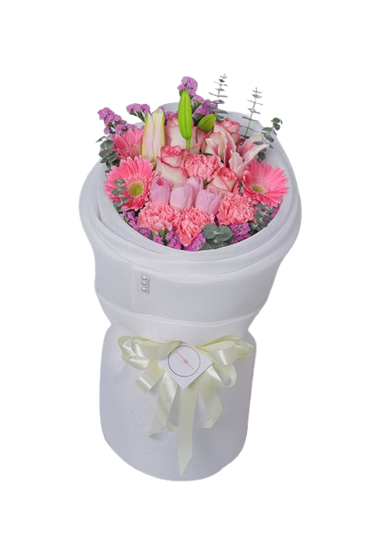
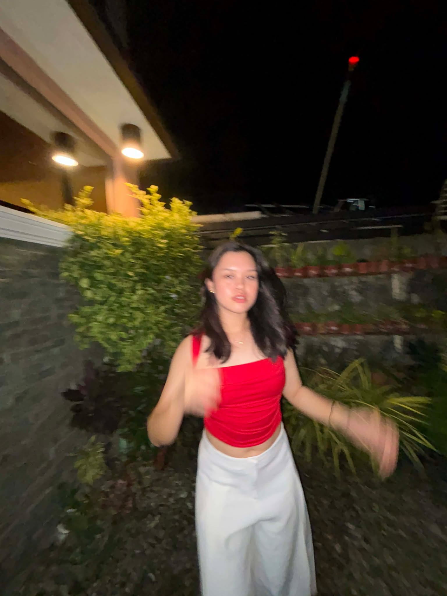

Ara oh, plawers
pretty mura ikaw!
We just started talking, but somehow you already stand out. I had to make something for you.
Let Me Show YouA Message For You
It's only been a few days, but you already got me smiling at my phone like an idiot.
I didn't plan this… but I'm not complaining either.
Also, happy birthday Vianney! I hope today treats you as good as you deserve.
I'm really glad I get to be part of it, even just like this.
— me, trying to play it cool ♡
Random Lore Drop
Before Me
Main character since day 1
I wasn't there, but I already know you were THAT kid. Probably cute + siaw combo… dangerous.
Character Development
Leveling up fr
Somewhere along the way, you became this version of you — and now I'm here like… ay okay, choya bataa oy.
Now — 21
From high school to now
Same ta'g school sauna… pero wala jud ta nagka storya o nagkaila, familiar lang. Karon ra ta nagkaila ug tarong, anam anam, and honestly… I'm glad nga nag cross ato path. Canon event? Right timing? I don't know, but I'm just really happy nga naa ko karon, getting to know you and all. Looking forward to more moments like this.
Random Shots
Mga random moments nimo — and yeah, I won't lie… nice kaayo tan-awon 😌
